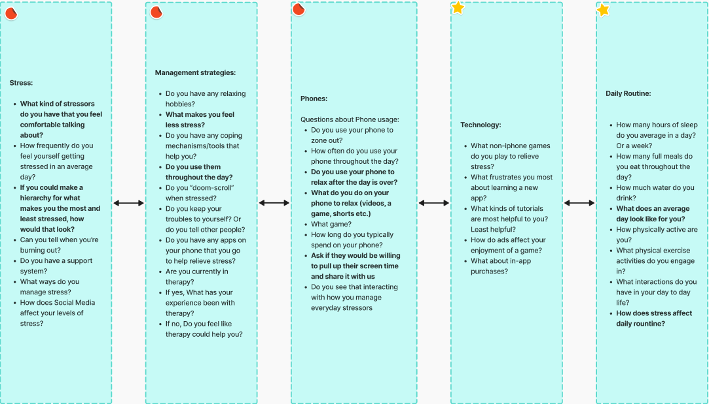
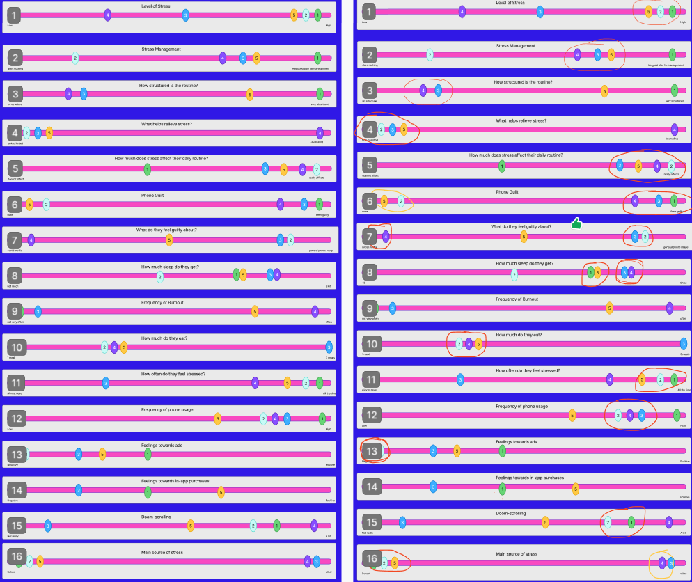

Process
Research Phase:
Our first task was to simulate a Kickoff Meeting where we defined the problem and our solution in the
problem statement:
The current state of the wellness and stress-relief industry has focused primarily on streak mechanics,
collectible rewards, and guilt-driven notifications. What existing products/services fail to address is
the
user’s actual mental state. Many current solutions overstimulate users through gamification, creating
anxiety over potentially disappointing a virtual pet/plant, or losing out on something. Our
product/service
will address this gap by providing relaxation without the pressure, competition, or over-stimulation
found
in current solutions.
After completing our simulated kickoff meeting, we did a literature review. We each found 1 source, and
wrote a 500 word summary and 400 word relevance on our chosen source.
Also in this phase, we performed a competitive audit where we found 3 competitor apps and documented
positives and negatives about them, to what works with stress relief apps. After the competitive audit, we
interviewed 5 people to understand their experience with stress and how we could design our app to best
serve the user.
Our questions:

After each interview, we completed an affinity map to organize our notes. We set a 5 minute timer and each person wrote down on sticky notes as many thoughts about the interview as they could. When the time was up, we categorized the ideas.

Modeling Phase:
Using the affinity map categories, we created a list of behavior variables that could be put on a
continuum.
- Level of Stress (low -- high)
- Stress Management? (does nothing -- has a plan for destressing)
- How structured is their routine? (no structure -- very organized)
- How do they prefer to plan? (task oriented -- journaling)
- How much does stress affect their daily routine? (doesn’t affect -- really affects)
- Does the person have phone guilt? (none -- a lot)
- What do they feel guilty about? (Social media -- regular necessary phone usage)
- Frequency of Burnout? (Not very often -- Very often)
- How much sleep do they get? (a little -- a lot)
- How much do they eat? (one meal -- three meals)
- How often do they feel stressed? (almost never -- all the time)
- Frequency of phone usage? (low -- high)
- Feelings towards ads? (negative -- positive)
- Feelings towards in-app purchases? (negative -- positive)
- doom-scrolling? (not really -- a lot)
- main source of stress (school -- other)
Then, we ranked the interviewees on the scale. After we ranked them, we circled the groups of interviews to show patterns in the data. We used red to show the primary pattern, and yellow to show secondary pattern.

Next, we synthesized the groups as characteristics of a primary and secondary pattern. So, we took the first pattern, "High level of stress" and wrote it down under the primary persona, because we had circled it in red. We continued this for all of our groupings. In the end, we were left with a primary and secondary one.


Our personas are what users lives looked like before our app. Once our personas were written, we moved to the requirements phase where we held a brainstorming session to get all our ideas about the app out to clear our thoughts and focus on designing the app around what the user needs instead of what we want. Next, we created a list of persona expectations categorized into data needs and functional needs. We had trouble at first figuring out what data needs were vs functional needs, but after having the professor explain it to us we finally understood that data needs are the raw data that an app requires. For instance, device date and time, contacts access are all data needs because that is raw data that the app needs access to. Functional needs are what the app does with the raw data. A way to input things is a functional need.

Using the persona expectations, we wrote context scenarios which detailed how our personas might use the app. They were a day-in-the-life snapshot of our persona characters.

Next, we read through the context scenarios slowly, and each action the persona took we wrote down as one requirement. Our requirements followed the action, object, context format. For example, we wrote input (the action) tasks (the object) for the day (the context). When finished we ended up with two separate list of requirements; one for our primary persona and one for our secondary persona. Then, we looked at the two lists and we found the overlapping requirements and separated them, to produce three lists, one for each of the two personas, and one for the overlap. The final step was to order the requirements.
Finally, after we had our list of requirements, we created a low-fidelity wireframe that we used as a guide to create the prototype. We moved into a design file on Figma which our team leader set up. We each had our own sandbox page, which is where we designed our pages before moving them onto the final design page. We also had a research page, that had our wireframe for reference. We had a style guide page where we had 100-900 color swatches for our brand colors, as well as our chosen typeface displayed in header, body and caption sizes. Our components were stored on the components page, and our final design was on the final design page. Lastly, we had a graveyard page where we put all our trashed items whether they were failed designs, unneeded items, or experiments.

These are the pages I worked on: